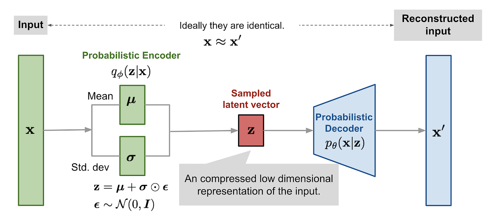

Variational Autoencoders
Big Picture
A Variational Autoencoder (VAE) is a special kind of generative model and latent-variable model. The key idea is to model a complex, high-dimensional data distribution through a much simpler, low-dimensional latent distribution.

Instead of directly modeling the complicated distribution of the observed data \(x\), a VAE assumes that the data is generated from an underlying latent variable \(z\). We model the latent space with a simple prior distribution and learn how to map between the latent representation and the observed data.
Motivation: What Are We Trying to Learn in a Generative Model?
Suppose we are given a dataset
The generative goal is to learn a model that captures the unknown data distribution \(p_X(x)\), so that we can eventually generate new samples that look as though they came from the same distribution.
A Generative Adversarial Network (GAN) can learn to generate realistic samples directly from random noise without explicitly modeling the underlying probability distribution. That's why GANs can suffer from issues such as mode collapse, where the generator produces a limited variety of samples that are good enough to fool the discriminator, instead of capturing the full diversity of the data distribution. For further reference, see this explanation of mode collapse in GANs .
In a latent-variable model, however, we introduce an unobserved variable \(z\) and explicitly model how \(z\) and \(x\) are related.
2. Latent Variable Models
Let \(z\) be a latent (unobserved) variable. The joint distribution can be written as
The corresponding marginal distribution of the observed data is obtained by integrating out the latent variable:
This is the fundamental construction behind latent-variable models: instead of directly describing a complicated distribution over \(x\), we introduce \(z\), model the joint distribution, and marginalize \(z\) when we want the likelihood of \(x\).
The difficulty is immediate: although the model may be simple in the joint space \((x,z)\), computing \(p_\theta(x)\) requires an integral over all possible latent values \(z\). For high-dimensional or continuous latent spaces, this integral is generally intractable.
3. Maximum Likelihood Estimation
If we could evaluate \(p_\theta(x)\), a natural way to estimate the model parameters would be maximum likelihood estimation (MLE).
But, as discussed above, calculating \(p_\theta(x)\) is intractable. As a workaround, we instead minimize the KL divergence between the true data distribution and the model distribution, which gives:
Expanding the KL divergence,
The first term does not depend on the model parameters \(\theta\). Therefore, when optimizing with respect to \(\theta\), we can treat it as a constant and ignore it. Hence,
Therefore, minimizing the KL divergence between the true data distribution \(p_X\) and the model distribution \(p_\theta\) is equivalent to maximizing the expected log-likelihood under the data distribution:
However, in a latent-variable model, we need to estimate not only the model parameters \(\theta\), but also the distribution of the latent variables simultaneously.
4. Introducing the ELBO
Introduce a distribution \(q_\phi(z\mid x)\) that approximates the posterior distribution of the latent variable \(z\) given an observation \(x\), where \(\phi\) denotes the learnable parameters of the variational distribution.
We start from the log-likelihood:
Since the logarithm is a concave function, Jensen's inequality gives
Applying Jensen's inequality gives a lower bound on the log likelihood:
This lower bound is called the Evidence Lower Bound (ELBO).
4.1 The ELBO decomposition
Factor the joint distribution as
Substituting this into the ELBO gives
The second term is the negative KL divergence:
Reconstruction / likelihood term
\[ \mathbb{E}_{q_\phi(z\mid x)} [\log p_\theta(x\mid z)] \]
Encourages the decoder to assign high likelihood to the observed data given latent samples.
Regularization / KL term
\[ D_{\mathrm{KL}} (q_\phi(z\mid x)\|p_\theta(z)) \]
Encourages the learned posterior to stay close to the chosen latent prior.
4.2 Why is it called a lower bound?
The gap between the log likelihood and the ELBO is itself a KL divergence. In particular,
Since the KL divergence is always non-negative, \[ \boxed{ D_{\mathrm{KL}} \left( q_\phi(z\mid x) \,\|\, p_\theta(z\mid x) \right) \geq 0,} \] the ELBO is guaranteed to be a lower bound on the log-likelihood. The bound becomes tight when \[ \boxed{ q_\phi(z\mid x)=p_\theta(z\mid x),} \] because in that case \[ \boxed{ D_{\mathrm{KL}} \left( q_\phi(z\mid x) \,\|\, p_\theta(z\mid x) \right) =0.} \]
Our original goal was to maximize the log-likelihood \(\log p_\theta(x)\). However, directly computing and optimizing this quantity is intractable in a VAE. Since \[ \boxed{ \log p_\theta(x) \geq \mathcal{L}(\theta,\phi),} \] we instead maximize the tractable ELBO. By maximizing the ELBO, we increase a lower bound on the log-likelihood, thereby indirectly encouraging the model to assign higher likelihood to the observed data.
The Foundational Problem of All Latent-Variable Models
However, in latent-variable models, computing \(p_\theta(x)\) requires marginalizing over the latent variable \(z\), which is generally intractable. Therefore, we need to find a tractable alternative, the ELBO, that allows us to optimize the model.
5. Gaussian Mixture Model: A Classical Latent-Variable Model
Before moving to VAEs, it is useful to see a classical latent-variable model: the Gaussian Mixture Model (GMM).
Let the latent variable be discrete:
5. A Latent-Variable Example: Gaussian Mixture Models
Before moving to VAEs, it is useful to see a classical latent-variable model: the Gaussian Mixture Model (GMM).
Let the latent variable be discrete:
Marginalizing over \(z\) becomes a sum:
For a GMM, each latent state corresponds to a Gaussian component:
Here, the mixture weights satisfy
If \(x\in\mathbb{R}^d\), then \(\mu_j\in\mathbb{R}^d\) and \(\Sigma_j\in\mathbb{R}^{d\times d}\).
Parameters of a GMM
The latent variable \(z\) tells us which Gaussian component generated an observation, but \(z\) is not directly observed in the dataset.
6. Expectation Maximization (EM)
For latent-variable models such as GMMs, one classical way of optimizing the likelihood is the Expectation Maximization (EM) algorithm.
The idea is to alternate between estimating the latent-variable distribution and updating the model parameters.
6.1 The two alternating steps
- E-step: with the current parameters fixed, estimate the posterior distribution over the latent variable.
- M-step: with the latent posterior fixed, update the model parameters.
Denote the estimates at iteration \(t\) by \(\theta_t\) and \(q_t\). The alternating optimization can be written conceptually as
For the GMM, the E-step computes the posterior responsibility of component \(j\):
The M-step then updates the parameters using these responsibilities.
The notes also highlight an important property of EM: under the usual assumptions, the likelihood does not decrease from one EM iteration to the next.
7. From Latent-Variable Models to the VAE
Now consider the case where \(z\) is continuous and the mapping from \(z\) to \(x\) is nonlinear. Computing the exact posterior \(p_\theta(z\mid x)\) is generally difficult.
A VAE introduces a parameterized approximation:
The parameters \(\phi\) are learned jointly with the generative-model parameters \(\theta\).
Figure adapted from here .
The encoder does not directly output a single deterministic latent vector. Instead, it outputs the parameters of a probability distribution over \(z\).
A common choice is a Gaussian posterior:
Thus, the encoder produces two quantities:
- \(\mu_\phi(x)\): the mean of the latent distribution.
- \(\sigma_\phi(x)\): the standard deviation of the latent distribution.
The decoder represents the conditional likelihood \(p_\theta(x\mid z)\). Together, these give the VAE's probabilistic encoder–decoder structure.
7.1 The VAE objective
The ELBO becomes
We optimize this objective with respect to both sets of parameters:
Encoder
\(x\rightarrow(\mu_\phi(x),\sigma_\phi(x))\)
Learns an approximate posterior over the latent variable.
Decoder
\(z\rightarrow p_\theta(x\mid z)\)
Learns how latent variables generate observations.
8. The Reparameterization Trick
At this point, there is a practical optimization problem. The VAE objective contains an expectation over \(z\sim q_\phi(z\mid x)\), but \(q_\phi\) itself depends on the learnable parameters \(\phi\).
We want to sample \(z\) while still allowing gradients to propagate through \(\mu_\phi(x)\) and \(\sigma_\phi(x)\).
8.1 Reparameterizing the Gaussian sample
Instead of sampling \(z\) directly from \(q_\phi(z\mid x)\), sample an auxiliary noise variable
Then construct \(z\) deterministically from \(\epsilon\):
where \(\odot\) denotes element-wise multiplication.
This construction has exactly the desired distribution:
This is what makes ordinary gradient-based optimization practical for the VAE.
9. Choosing a Gaussian Decoder
To evaluate the likelihood term, we need to specify a probability distribution for \(p_\theta(x\mid z)\). A simple design choice used in the notes is a unit-covariance Gaussian centered at the decoder output:
Its log likelihood is
Since the first term is constant with respect to the decoder parameters, maximizing the Gaussian log likelihood corresponds to minimizing a squared reconstruction error:
10. The KL-Divergence Term
The other component of the VAE objective is
A common prior is a standard normal:
If the encoder produces a diagonal Gaussian posterior,
the KL divergence between the two Gaussians has a closed-form expression:
This term encourages the encoder's latent distribution to remain close to the chosen prior \(\mathcal{N}(0,I)\). This is important because generation can then proceed by sampling a latent vector from the prior and passing it through the decoder.
11. Putting Everything Together: Training the VAE
Combining the Gaussian decoder and Gaussian posterior gives the practical VAE training objective.
For a minibatch \(\{x_i\}_{i=1}^{M}\), sample \(\epsilon_i\sim\mathcal{N}(0,I)\) and construct
The empirical ELBO can then be approximated using Monte Carlo samples:
With the unit-covariance Gaussian decoder, maximizing this objective is equivalent, up to constants and scaling, to minimizing a loss of the form
More explicitly, for the squared-error Gaussian likelihood:
11.1 Gradient-based optimization
The reparameterized sample makes the objective differentiable with respect to both \(\phi\) and \(\theta\). We can therefore update the parameters using gradient-based optimization:
Here \(\alpha\) denotes the learning rate. In practice, one commonly uses a stochastic optimizer such as Adam to perform these updates.
11.2 Training loop
- Take an observation \(x\).
- Pass \(x\) through the encoder to obtain \(\mu_\phi(x)\) and \(\sigma_\phi(x)\).
- Sample \(\epsilon\sim\mathcal{N}(0,I)\).
- Construct \(z=\mu_\phi(x)+\sigma_\phi(x)\odot\epsilon\).
- Pass \(z\) through the decoder to obtain \(\hat{x}_\theta(z)\).
- Compute the reconstruction/likelihood term.
- Compute the KL divergence to the prior.
- Combine the terms into the VAE objective.
- Backpropagate and update \(\phi\) and \(\theta\).
12. Summary
The VAE is not an isolated encoder–decoder trick. It follows from a sequence of ideas in probabilistic modeling.
- Latent-variable model: introduce an unobserved \(z\) and model \(p_\theta(x,z)\).
- Marginal likelihood: \(p_\theta(x)=\int p_\theta(x,z)\,dz\), but the integral can be intractable.
- Variational approximation: introduce \(q_\phi(z\mid x)\) to approximate the latent posterior.
- ELBO: replace the difficult log likelihood with a tractable lower bound.
- Two-term interpretation: maximize reconstruction likelihood while keeping the approximate posterior close to the prior.
- Reparameterization: write \(z=\mu_\phi(x)+\sigma_\phi(x)\odot\epsilon\) so that gradient-based learning can pass through the stochastic sampling operation.
Once this equation is understood, the familiar VAE architecture becomes much less mysterious: the encoder learns the variational posterior, the reparameterization trick makes its sampling differentiable, and the decoder learns the conditional likelihood.